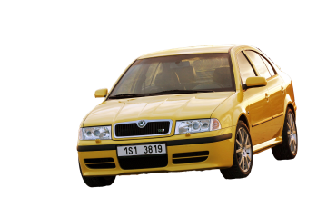

Historie modelu



O autě větším než Favorit s logem okřídleného šípu snil už ve druhé polovině 80. let minulého věku kdekdo. Ono se na něm ale opravdu pracovalo. Kde? V Itálii u Bertoneho. Tým stylistů tedy ještě pořád vedl Marc Deschamps, který nakreslil i exteriér Škody 781. Jenže projekt skončil u skic a modelu, který měl mimochodem rovněž asymetricky umístěné logo.
V roce 1991 přišel do Mladé Boleslavi Volkswagen. Škoda A+, jak znělo v médiích zveřejňované interní označení nového modelu, prvního vyvíjeného zcela pod taktovkou německého koncernu, se začala rodit prakticky ihned po převzetí, byť postupném. Za základ měl původně posloužit podvozek Golfu III. generace s rozvorem pouhých 2471 mm.
Tvary byly svěřeny Giorgettu Giugiarovi. Šéf Ital Designu měl sice se Škodou z minulosti velmi špatné zkušenosti, protože jeho návrhy řad 720 a 760 byly smeteny ze stolu, avšak s Volkswagenem přesně opačné. Proto kývl. Na konci roku 1992 měl hotov hliněný model, který představil kromě jiného i českým politikům, většinovým vlastníkem Škody byl totiž se 70 % ještě stát. Tehdejší předseda vlády České republiky (ano, ještě za federace) Václav Klaus označil design za příliš italský, což znamenalo konec nadějím. Ne nadlouho...
Ferdinand Piëch, tehdy čerstvě šéf VW povolal z Audi designéry Dirka van Braeckela a Raula Pirese, právě oni stáli za konečným vzhledem vozu. Nepohyblivá maketa stříbrného auta v měřítku 1:1, kterou má dodnes Škoda uloženou v depozitáři, byla hotova už ve třiadevadesátém, od finálních vzorků se lišila pouze detaily. Ty ladil Luc Donckerwolke, který byl „přesunut“ také z Ingolstadtu v roce 1994. Tehdy se zrodily první funkční vzorky a ihned zamířily ke zkouškám. Časopis Auto Tip poté v létě 1995 zveřejnil coby plakát první firemní snímek.
Pro označení sáhla automobilka do historie a zvolila to, které nesly v období 1959-1971 tudory a kombi klasické koncepce, modernizace řady 440/445, tedy Spartaku. Moc dobře si je pamatují naši otcové, respektive dědové. VW novince přidělil interní tovární kód 1U. Kompaktní škodovka byla (a kupříkladu Sdružením dovozců automobilů její nástupkyně stále jsou) řazena samotným výrobcem marketingově do střední třídy. Délkou jí při debutu odpovídala, nicméně co se rozvoru týče bylo takové zařazení již dosti sporné. Jury soutěže o evropský Automobil roku Octavii viděla už den po startu produkce předsérie: 4. dubna 1996.
Paleta výhradně koncernových motorů při debutu začínala zážehovou šestnáctistovkou OHC s litinovým blokem (1598 cm3/55 kW/75 k). Movitější mohli zvolit pětiventilovou osmáctistovku DOHC s pro Volkswagen tradičním objemem 1781 cm3 a 92 kW (125 k), která však spolehlivostí zrovna nevynikala. Starý známý turbodiesel 1.9 TDI (1896 cm3) šlo zprvu koupit pouze v 66kW (90k) verzi. Převodovky byly nejdříve jen pětistupňové přímo řazené, automaty se čtyřmi stupni přišly na řadu v sezóně 1997.
Okřídlený šíp v režii dvou véček nabídl klientům kus auta navíc s gigantickým kufrem (528 l v základu, po sklopení zadních sedaček až 1320 l) za rozumný peníz, základní model přišel na 335.700 korun (byť tato částka dlouho nevydržela). A praktickou výklopnou zádí typu liftback. Nicméně vzdálenost mezi nápravami 2512 mm ji řadila jasně do třídy nižší střední. Podvozek (platforma PQ34 alias A4) byl shodný s krátce předtím prezentovaným Audi A3 a čtyřkovým Golfem, který se ukázal až na IAA 1997. To ovšem znamenalo málo místa na zadních sedadlech, tam si pasažéři komfortu příliš neužili. Co na tom, že šasi mělo rozvor delší než původně zvažovaná platforma A3?
Konstrukčně se jednalo o „moderní klasiku“ se vzpěrami McPherson a spodními příčnými rameny vpředu, respektive klikovou nápravou vzadu. Chování na silnici pomáhaly příčné zkrutné stabilizátory, o komfort se staraly vinuté pružiny a teleskopické tlumiče, brzdám musely stačit vzadu bubny, přední kotouče měly vnitřní chlazení, za ABS se připlácelo. Hřebenové řízení mají škodovky již dlouho, standard představovala čtrnáctipalcová ocelová kola, k vyšším výbavám se dodávala patnáctipalcová litá.
Liftback byl 4511 mm dlouhý, 1731 mm široký a 1429 mm vysoký, součinitel odporu vzduchu dosahoval nejméně 0,31. Nadčasově elegantnímu autu, jehož tvary neurazí ani dnes, dominovala maska chladič, ta měla vyjádřit robustnost a solidnost s kapkou luxusu i u vozu této velikosti. Z bočního pohledu byla Octavia, pravda, mírně disproporční. Dlouhý zadní převis naopak úspěšně maskovaly široký C-sloupek, skloněné zadní okno i kratičký náznak stupňovité zádi. Vážila minimálně 1160 kg, diesely 1285 kg. 1.9 TDI ale jezdilo za 5-6 l/100 km, takže 55litrová palivová nádrž byla tak akorát. I s benzinovými šestnáctistovkami jste se vešli do osmi...
Sériová výroba Octavie se rozběhla v úterý 3. září 1996, zahájil ji v Mladé Boleslavi sám český prezident Václav Havel. Nový model se představil médiím v místě produkce už o dva dny dříve, tedy v neděli 1. 9. a současně také proběhla prezentace veřejnosti na Staroměstském náměstí v Praze. Produkce si vyžádala stavbu moderní linky v hale o rozloze 37.500 m2, na níž navázala lakovna schopná pojmout až 1.800 vozů. Kapacita automobilky vzrostla o 90 000 na 350 000 aut ročně. Světová výstavní premiéra Octavie se uskutečnila na konci měsíce v Paříži a první domácí zákazníci se dočkali v listopadu.
Mnohým se nelíbila ani v základu šedá, ve vyšších stupních černo-šedá palubní deska. Mě osobně její tvary nijak neurážely. Třeba provedení s atmosférickým motorem 1.8 stálo přes 468 tisíc a 1.9 TDI takřka půl milionu. Škodovka v západní části Evropy cílila na mladé rodiny, ve východní na podnikatele. Jenže automobilka měla problémy s kvalitou. Ještě u některých vozů roku výroby 1997 netěsnilo čelní sklo a dovnitř zatékalo!
Na frankfurtské IAA 1997 se objevila designová studie Octavie v provedení Combi. Ta zaujala nafialovělou barvou a koly. Na sériovou verzi si však zákazníci museli počkat do následujícího roku, oficiálně byla prezentována v únoru a do prodeje se dostala v květnu. Kombík měl v základu o 20 l větší zavazadelník (548 l), vnější rozměry zůstaly totožné, byl pouze o 19 mm vyšší než starší karosářské provedení (1448 mm).
Liftbacky modelu 1999 ve výbavě SLX dostaly jinou palubní desku s menší přístrojovou kapličkou, ta debutovala právě v kombi. Od dubna 1999 se nabízela základní verze s motorem 1.4 MPI. Ano, šlo o prastarý škodovácký čtyřválec OHV s výkonem jen 44 kW (60 k). Paletu také rozšířil 2.0 MPI (1984 cm3/85 kW/115 k) od VW, což byl dvouventil OHC, původně z 80. let.
V listopadu se rovněž objevil pohon 4x4 se spojkou Haldex, která přiřadila zadní nápravu při prokluzu předních kol. Nejdříve byl k dostání pouze v kabátku kombíku. Čtyřkolky dostaly větší 63litrovou nádrž a zprvu se dodávaly s motory 1.8 Turbo/110 kW, 2.0 MPI a 1.9 TDI/66 kW. Všechny Octavie pak měly od té doby standardně ABS.
Lehounká modernizace v září 2000 znamenala modifikaci přední části, reflektory již nebyly striktně rovné, spolu s nárazníkem se drobně zakulatily a dostaly kompletně čirou optiku. Koncová světla zase získala novou grafiku. Facelift upravil vnější rozměry, liftbacky byly nyní 4507 mm dlouhé a 1431 mm vysoké, kombi měla na délku 4513 mm a do výšky 1457 mm. Konstruktéři zpevnili B-sloupky a vyztužili motorový prostor. Auta se zvedla díky montáži modifikované zadní nápravy.
Uvnitř se mezi přístroji skvěl nový rychloměr, příplatky rozšířily xenonové výbojky, dešťový senzor, stěrač zadního okna (!) pro liftbacky, navigace, elektrické nastavení předních sedaček a ESP. Označení výbav se změnilo ze zkratek na slovní: Classic, Ambiente a Elegance. Postupně přibyly i akční modely: Family, Sport, Style...
V září 2002 se začaly montovat motory TDI-PD, tedy se vstřikováním čerpadlo-tryska o výkonu 96 kW (130 k). Kombinovaly se výhradně se šestistupňovou manuální převodovkou. V roce 2003 přišly akční modely Collection, Drive a Rider. Na sklonku roku se odporoučel do historie naftový motor bez turba. Milion Octavií se slavil 17. února 2004, kdy už vyhlížela ambiciozní nástupkyni, ta se představila v březnové Ženevě. Jenže její příchod neznamenal automatickou stopku pro první moderní vůz tohoto jména.
Pokračoval s přídomkem Tour jako levnější alternativa, s osekanou nabídkou motorů i výbavy a nižšími cenami, ale na ně zákazníci slyšeli. Zdaleka nejen u nás, ale i v západní Evropě a Asii. Existovala i akční výbava Tour Trumf (tento název má u Škody už tradici). V září 2004 skončila svou pouť po kapotou dvojice motorů (1.6/55 kW, 1.9 TDI-PD/96 kW). Pokud byl kombík homologovaný v kategorii N1, tedy coby užitkové auto s přepážkou za zadními sedadly, musel být „papírově“ jen čtyřmístný. Od října 2005 se pro Tour dodával 1.9 TDI-PD/74 kW (101 k), také v kombinaci se čtyřkolkou a manuálním šestikvaltem! Nejostřejší RS pokračovalo dále, rozloučilo se až v lednu 2006 spolu s 1.9 TDI/81 kW.
Na podzim 2008 proběhla poslední drobná modernizace: zahrnovala nové látkové čalounění z Octavie II. dále zpětná zrcátka a volant z Roomsteru, respektive druhé Fabie. Víčko nádrže už se neotevíralo elektricky dálkově tlačítkem na palubní desce, řidič prostě vystoupil a otevřel si ho rukou zvenčí. Šetřilo se i zde... Ze zadních dveří naopak zmizel zámek. Až do samotného finále vydržely motory 1.4 16V, 1.6/75 kW, 1.8 Turbo a 1.9 TDI-PD/74 kW, klasické „tédéíčko“ se 66 kW vyběhlo třičtvrtě roku předtím, v březnu 2010. Dlouhý aktivní život ukončila emisní norma Euro 5, která vstoupila v platnost 1. ledna 2011.
Mimochodem, v úvodu článku zmíněný Giugiarův návrh se nakonec v roce 1998 stal po úpravách přední části druhým Seatem Toledo, ovšem pochopitelně na stejné platformě jako Octavia. Šlo o méně praktický sedan, ovšem alespoň nepřišly vniveč výrobní zařízení a nástroje, které už existovaly šest let...
Motory
modelová řada Octavie - 1. generace disponovala řadou motorů ať vlastní produkce, nebo z koncernu VW, včetně velmi oblíbeného motoru 1,9TDI
Škoda Octavia I
| typ motoru |
roky výroby |
výkon |
| 1,4 | 1999 - 2001 | 44KW |
| 1,4 16V | 2000 - 2010 | 55KW |
| 1,6 | 1996 - 2004 | 55KW |
| 1,6 16V | 1997 - 2007 | 74KW |
| 1,6 16V | 2000 - 2010 | 75KW |
| 1,8 20V | 1996 - 2000 | 92KW |
| 1,8T | 1997 - 2010 | 110KW |
| 1,8T RS | 2001 - 2006 | 132KW |
| 2,0 | 1999 - 2007 | 85KW |
| 1,9 SDI | 1997 - 2003 | 50KW |
| 1,9 TDI | 1996 - 2010 | 66KW |
| 1,9 TDI | 2005 - 2010 | 74KW |
| 1,9 TDI | 1997 - 2006 | 81KW |
| 1,9 TDI | 2002 - 2004 | 96KW |
Škoda Octavia I Combi
| typ motoru |
roky výroby |
výkon |
| 1,4 16V | 2000 - 2010 | 55KW |
| 1,6 | 1998 - 2004 | 55KW |
| 1,6 16V | 1998 - 2007 | 74KW |
| 1,6 16V | 2000 - 2010 | 75KW |
| 1,8 20V | 1998 - 2000 | 92KW |
| 1,8T | 1998 - 2010 | 110KW |
| 1,8T RS | 2002 - 2006 | 132KW |
| 2,0 | 1999 - 2007 | 85KW |
| 1,9 SDI | 1998 - 2003 | 50KW |
| 1,9 TDI | 1998 - 2010 | 66KW |
| 1,9 TDI | 2000 - 2010 | 74KW |
| 1,9 TDI | 1998 - 2006 | 81KW |
| 1,9 TDI | 2002 - 2004 | 96KW |
recenze